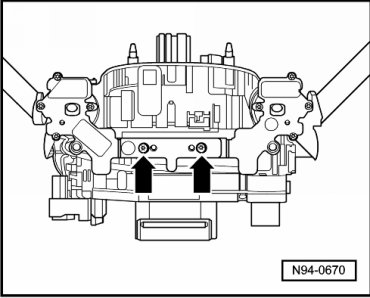
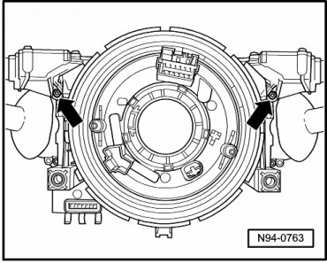
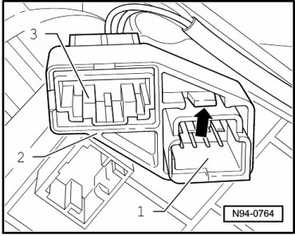
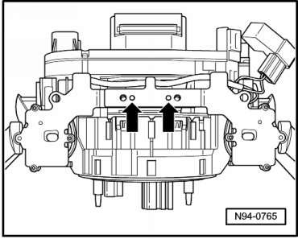
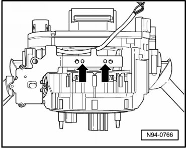
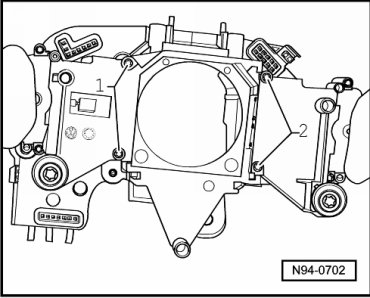

Steering Column Switch
Steering Column Switch
• Also, if only one individual component of steering column switch is removed or replaced, the sequence described in the following must always be adhered to.
Disassembling
- Remove steering column switch --> [ Steering Column Switch ] Steering Column Switch.
- Remove both bolts - arrows - at bridge of Steering Wheel Tiptronic Switch (E389).

- Remove both bolts - arrows - at Steering Wheel Tiptronic Switch (E389).

- Release locking mechanism - arrow - at multi-pin harness connector of Airbag Spiral Spring/Return Spring With Slip Ring (F138) and of Steering Angle Sensor (G85) - 1 -.

- Carefully set aside bracket - 2 - with multi-pin harness connector for Steering Wheel Tiptronic Switch (E389) - 3 -.
- Release locking mechanism - arrows - at bridge of right Steering Wheel Tiptronic Switch (E389).

- Carefully set aside bridge with right Tiptronic switch.
- Release locking mechanism - arrows - at bridge of left Steering Wheel Tiptronic Switch (E389) and remove the complete Steering Wheel Tiptronic Switch (E389).

- Carefully remove Airbag Spiral Spring/Return Spring With Slip Ring (F138) and Steering Angle Sensor (G85) from steering column switch.
• Airbag Spiral Spring/Return Spring With Slip Ring (F138) and Steering Angle Sensor (G85) must not be twisted out of center position during removal.
- To remove "windshield wiper switch", remove bolts - 2 -.

- Remove "windshield wiper switch".
- To remove "turn signal switch", remove bolts - 1 -.
- Remove "turn signal switch".
- Remove Steering Column Electronic Systems Control Module (J527) from "turn signal switch".
Assembly
Assemble in reverse order of disassembly, observing the following:
• If Steering Column Electronic Systems Control Module (J527) is replaced, it must be coded --> [ Steering Column Electronic Systems Control Module, Coding ] Programming and Relearning.
• Make sure wires are routed correctly at steering column switch.